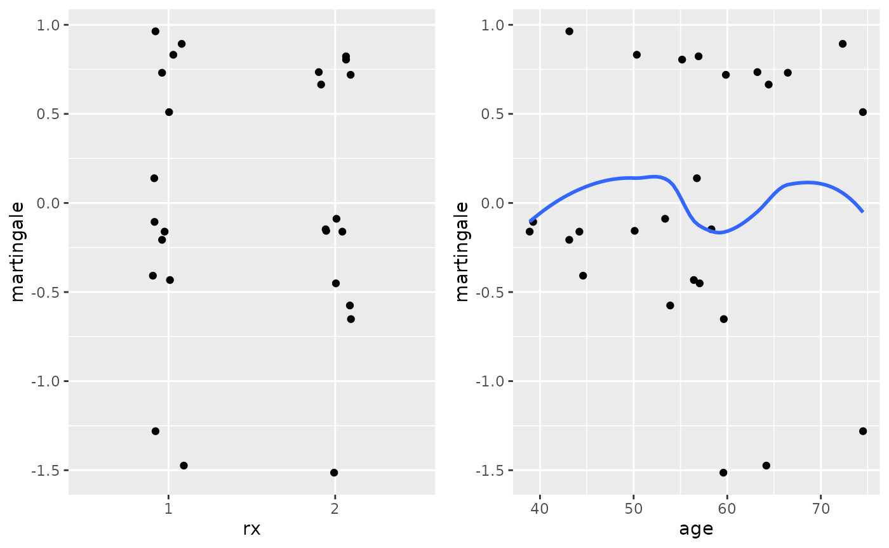
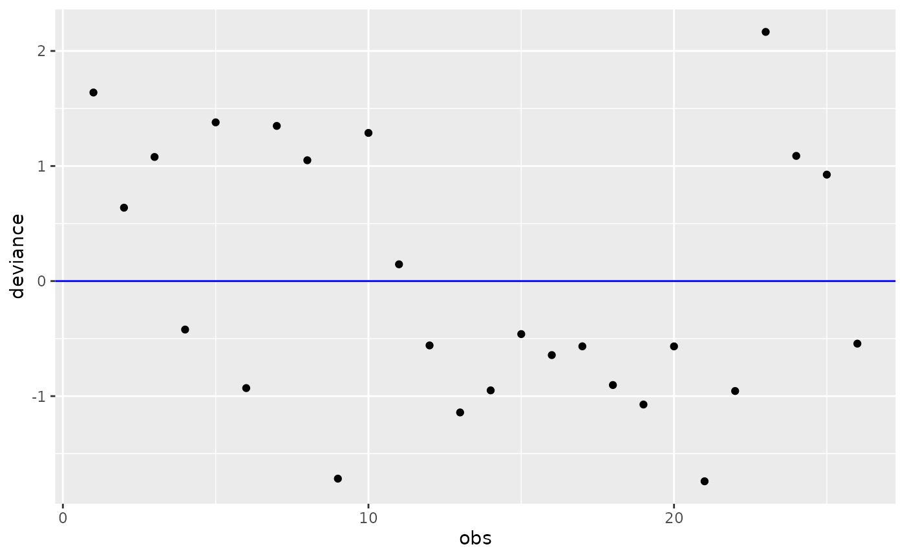

library(survstan)
#> Loading required package: survival
library(dplyr)
#>
#> Attaching package: 'dplyr'
#> The following objects are masked from 'package:stats':
#>
#> filter, lag
#> The following objects are masked from 'package:base':
#>
#> intersect, setdiff, setequal, union
ovarian <- ovarian %>%
mutate(
rx = as.factor(rx)
)
# fitting the model:
fit <- aftreg(Surv(futime, fustat) ~ rx + age, baseline = "weibull", data = ovarian, init = 0)
# investigating the fitted model:
estimates(fit)
#> rx2 age alpha gamma
#> 5.674487e-01 -7.909102e-02 1.816064e+00 6.166990e+04
coef(fit)
#> rx2 age
#> 0.56744871 -0.07909102
confint(fit)
#> 2.5% 97.5%
#> rx2 -9.942215e-02 1.234320e+00
#> age -1.180869e-01 -4.009511e-02
#> alpha 1.351074e+00 2.281055e+00
#> gamma 5.855536e+04 6.478443e+04
summary(fit)
#> Call:
#> aftreg(formula = Surv(futime, fustat) ~ rx + age, data = ovarian,
#> baseline = "weibull", init = 0)
#>
#> Accelerated failure time model fit
#>
#> Regression coefficients:
#> Estimate StdErr z.value p.value
#> rx2 0.567449 0.340246 1.6678 0.09536 .
#> age -0.079091 0.019896 -3.9752 7.033e-05 ***
#> ---
#> Signif. codes: 0 '***' 0.001 '**' 0.01 '*' 0.05 '.' 0.1 ' ' 1
#>
#> Baseline parameters:
#> estimate se lwr upr
#> alpha 1.8161e+00 2.3724e-01 1.3511e+00 2.2811
#> gamma 6.1670e+04 1.5891e+03 5.8555e+04 64784.4280
#> ---
#> loglik = -88.76171 AIC = 185.5234
tidy(fit)
#> # A tibble: 4 × 6
#> parameter type estimate se `2.5%` `97.5%`
#> <chr> <chr> <dbl> <dbl> <dbl> <dbl>
#> 1 rx2 coefficient 0.567 0.340 -0.0994 1.23
#> 2 age coefficient -0.0791 0.0199 -0.118 -0.0401
#> 3 alpha baseline 1.82 0.237 1.35 2.28
#> 4 gamma baseline 61670. 1589. 58555. 64784.
vcov(fit)
#> rx2 age
#> rx2 0.115767673 0.0017578433
#> age 0.001757843 0.0003958601
# residual plots:
ggresiduals(fit, type = "coxsnell")
ggresiduals(fit, type = "coxsnell")
ggresiduals(fit, type = "coxsnell")
# Deviance analysis:
fit1 <- aftreg(Surv(futime, fustat) ~ 1, baseline = "weibull", data = ovarian, init = 0)
fit2 <- aftreg(Surv(futime, fustat) ~ rx, baseline = "weibull", data = ovarian, init = 0)
fit3 <- aftreg(Surv(futime, fustat) ~ rx + ecog.ps, baseline = "weibull", data = ovarian, init = 0)
anova(fit1, fit2, fit3)
#>
#> Model 1 : Surv(futime, fustat) ~ 1
#> Model 2 : Surv(futime, fustat) ~ rx
#> Model 3 : Surv(futime, fustat) ~ rx + ecog.ps
#> ---
#> loglik LR df Pr(>Chi)
#> Model 1: -97.95390 1.73882 2 0.4192
#> Model 2: -97.36415 0.55932 1 0.4545
#> Model 3: -97.08449 - - -
AIC(fit1, fit2, fit3)
#> fit1 fit2 fit3
#> 199.9078 200.7283 202.1690